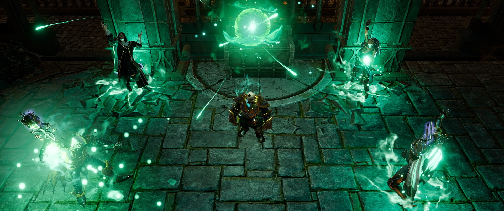
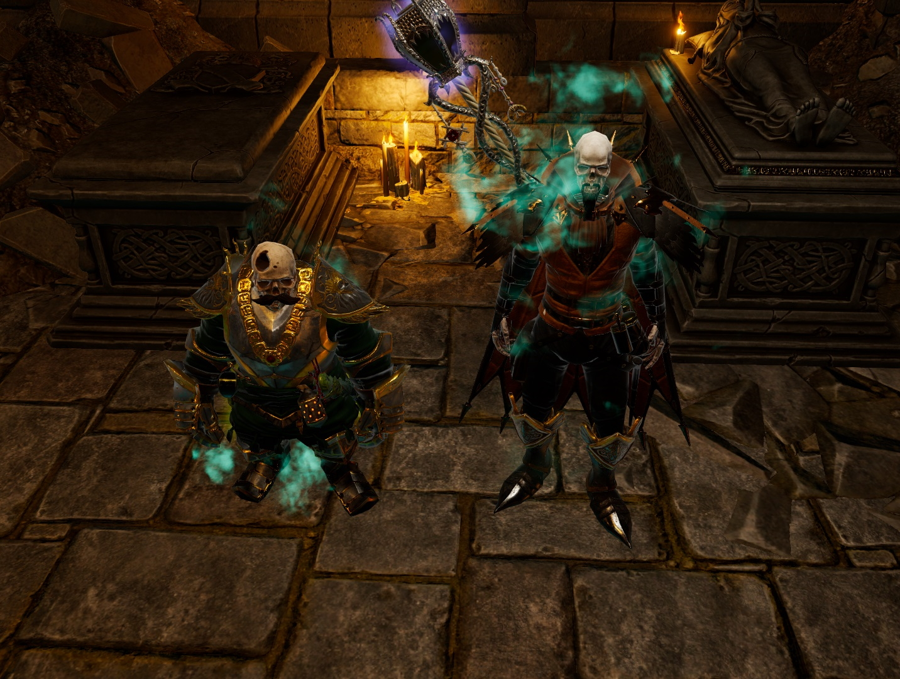

December Game of the Month: Divinity Original Sin 2
Posted December 26, 2019

The Original Sin games have had a fabled development. Their massive crowdfunding success is only eclipsed by how involved and energetic their fanbase came to be. Larian Studios absolutely knocked this game out of the park, and it took me longer than I'd care to admit to actually see and acknowledge that fact.
I purchased the game shortly after its release in September 2017. I'm not sure what did it - perhaps framerates, or maybe I just wasn't used to the skewed top-down perspective - but I got
Then, in October (maybe November) of this year, one of my favorite Twitch streamers, Moonmoon, started his own playthrough of the game. At first I was worried I wouldn't be able to watch his stream for the next few weeks, but I was pleasantly surprised when I found that I wasn't getting any headaches. Optimistic, I downloaded the game again, and was able to play with no issues!
This was one of the first titles in a long while that was able to make me lose track of time. I was able to fully immerse myself in the world, the story, and the characters. Perhaps one of the best parts of this game, if not THE best part, is the writing. Every character has strengths and weaknesses, flaws and goals, and will expose the facets of their personalities in realistic ways. The story itself is a little campy, but just the right amount so. It's comparable to J.K. Simmons playing J. Jonah Jameson in Sam Raimi's first Spiderman movie with Tobey Maguire. It's cheesy, over-the-top, but not offensively so. It's exactly cliche enough to be satisfying, yet original enough to keep you on your toes.
Another fabulous point about this game is how open it is. You can play the game however you choose - a stealthy rogue, a powerful wizard, a brutish fighter. You can also decide your own character's personality and morality. This means that every player has a unique experience, just as every D&D player (which this game draws heavy inspiration from) has a unique experience with their own created characters. There are options to play pre-made characters with their own stories if you're interested in it, but I greatly enjoyed concocting my own character from scratch.
I've played through and beat the game once, solo. Garrix the Lich wrought absolute destruction on the world, eventually ascending to Godhood and contending with the ever-nebulous God-King of the Abyss. I made it a point to kill absolutely every living creature that I could in the game because I've never, in any game, played a truly evil character before. Normally, the game expects you to have 3 companions along with your own created character. These companions are picked up while adventuring through the first Chapter on the prison island of Fort Joy. Instead, however, you can take a talent to essentially double your power, but it means you travel solo or with only one partner. So, as you can see to the right, Garrix the Lich was accompanied by Fane the Eternal. They slaughtered innocents, killed gods, and even released a gas attack on the largest city on the coast - Arx.
I've also been lucky enough to convince (with Moonmoon's help) my friends to play the game as well, and we've started a 4-person "campaign" through the game with wildly different characters. We don't play it nearly often enough, but it has been great fun when we have played so far.
If you're interested at all in RPGs or table-top games like Dungeons & Dragons, you'll enjoy this game, and I'd highly recommend it.